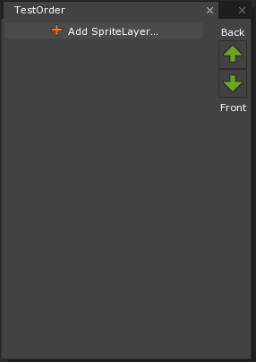
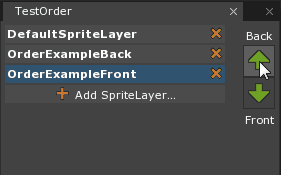
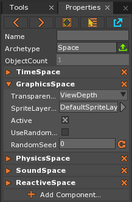

SpriteLayer and SpriteLayerOrder
SpriteLayers are used to give an order of precedence to different Sprites and/or SpriteText that are at the same depth away from the Camera. By utilizing SpriteLayers in conjunction with SpriteLayerOrders, the Engine can be told how to layer the images to eliminate any Z-fighting or clipping issues.
Using SpriteLayers
SpriteLayers are added like any other Resource, by using Command : Add and selecting SpriteLayer. After naming the new SpriteLayer and selecting Create the new Resource will be added to the project, however nothing will change with just adding a SpriteLayer resource as it won’t be assigned to any SpriteLayerOrder yet.
To assign any new SpriteLayers, first a new SpriteLayerOrder Resource needs to be created by using Command : Add and selecting SpriteLayerOrder. Once created a new window will open which will allow new SpriteLayers to be applied and organized.

Clicking on Add SpriteLayer will bring up a list of all existing SpriteLayers, and the chosen SpriteLayer will then be added to the bottom of the list. The list represents the order of all SpriteLayers in it, with the top of the list being the Layer the furthest back and the bottom of the list being the most forward layer. If a SpriteLayer is mistakenly added in the wrong order, or needs to be changed after the fact, simply select that SpriteLayer and click on either the Back or Front arrow to adjust it.

Once the SpriteLayerOrder has been organized as desired, it will need to be assigned to the GraphicsSpace Component on the Space Archetype. This can be found by either pressing Shift+S when the level window has focus, opening the Space Archetype in the Library Window, or using Command : SelectSpace. Once the object is selected, in the GraphicsSpace Component change the SpriteLayerOrder Property to the desired SpriteOrderLayer.
